| 日付 | 2019年4月30日（火） - 2019年5月5日（日） | ||||
|---|---|---|---|---|---|
| 山域 | 四国の山 | ||||
| メンバー | 家族（妻、長女・8歳、長男・5歳） | ||||
| 山行形態 | 子連れ5泊6日キャンプ、ホテル泊 | ||||
| アクセス | 車、ロープウェイ | ||||
| ルート |
|
5日目
祖谷の朝の景色。今日も晴れそうだ。
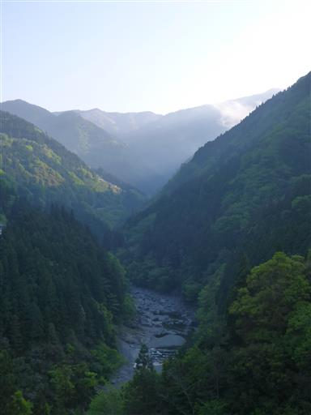
立派な木に藤の木が巻き付いて、きれいな花を咲かせている。
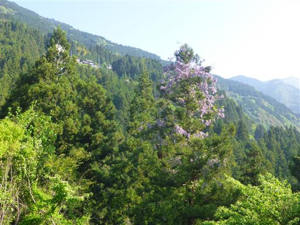
朝食をとったら、近くにあるかずら橋の見学に行く。
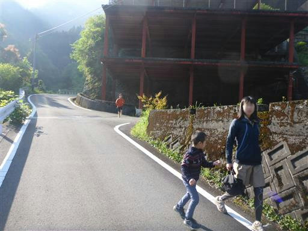
琵琶の滝。落差50mのそこそこ立派な滝だ。
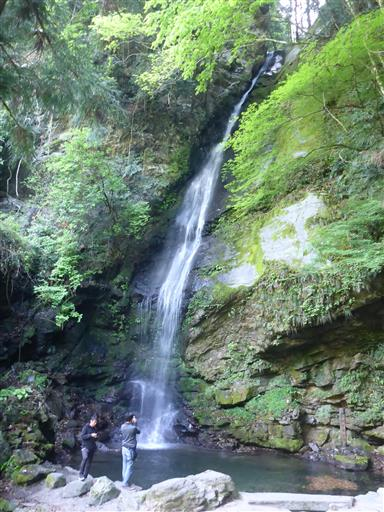
かずら橋。蔓で造られた橋で、日本三奇橋の一つだ。
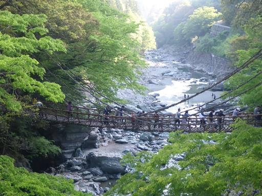
橋を渡るのは有料（550円）でちょっと高め。維持費がかかるのだろう。
ものすごい数のサルナシ（別名シラクチカズラ）が使われている。

板と板の間に隙間が空いていて下が見えている。
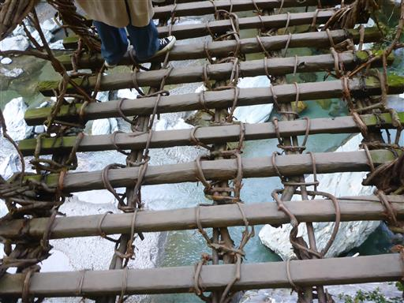
息子は完全に及び腰。かなり怖いようだ。
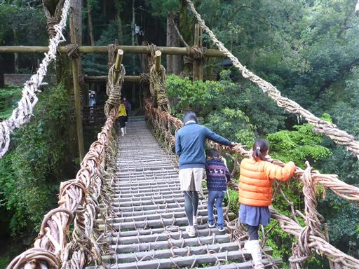
橋から見た景色。高度感はさほど無い。
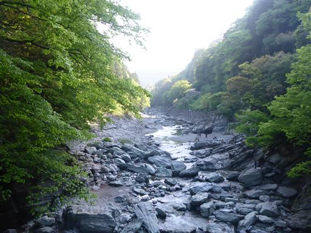
橋は一方通行でこちらは出口。こちらに立派な標識がある。
現在では安全のためワイヤが入っているらしいが、
蔓のみで造られた橋は珍しく、楽しい体験だった。
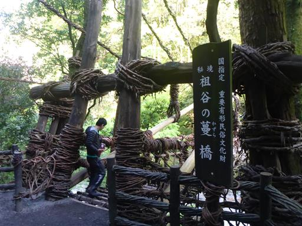
周囲は土産物屋が並んでいる。巨大な駐車場と大勢の観光客。
秘境にあの橋があると趣があるのだが、ここまで観光地化されてしまうと雰囲気が台無しだ。
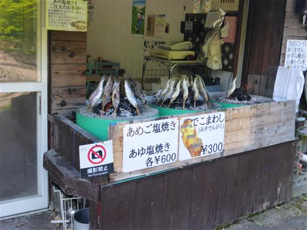
橋を渡った後は、河原に下りて遊ぶことにする。
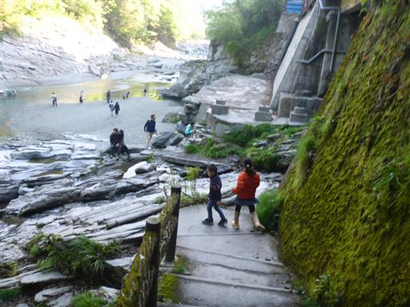
巨大な岩だらけ。子供たちは登ったり下りたりを楽しんでいる。
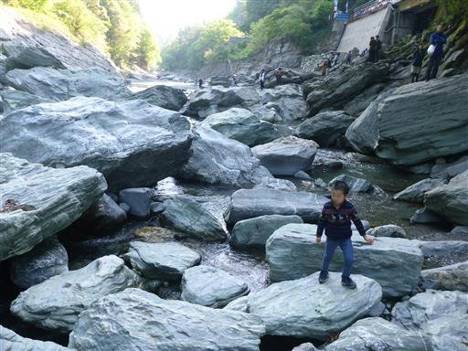
下からかずら橋を見上げる。
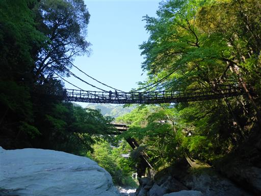
人が増えてきたので宿に戻ることにする。
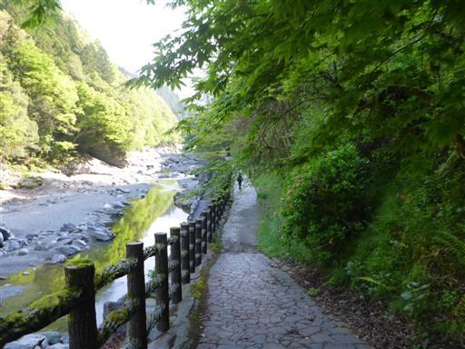
途中できれいな河原があったので、少しだけ立ち寄る。
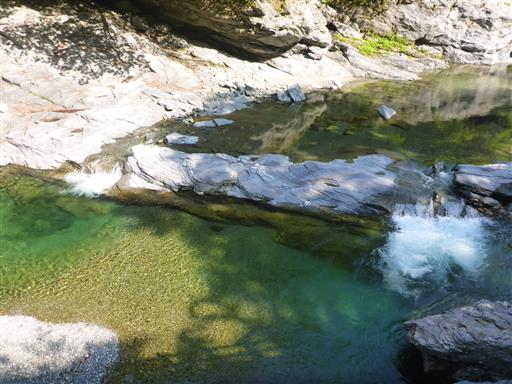
河原と道を繋ぐ階段は、壁に石が突き刺さった面白い造りになっている。
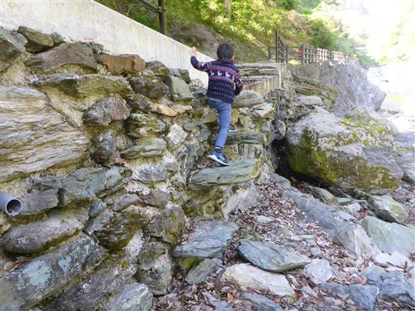
出発の準備を整えたら宿を後にする。
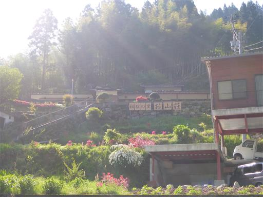
祖谷の側にある大歩危小歩危を訪れる。
険しく美しい峡谷が続く名勝だ。
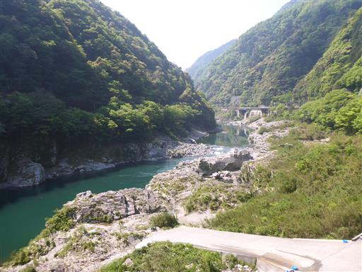
大歩危小歩危のアクティビティと言えばラフティング。
ラフティング体験を行ってみることにする。
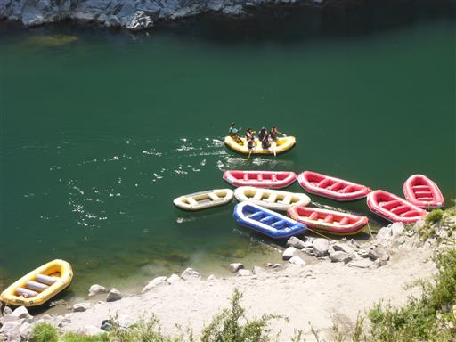
始めてオールを手にして子供たちは大喜び。
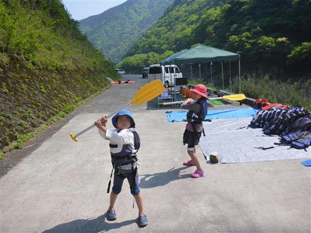
ラフトに乗船。客6人とインストラクター1人の計7人で出発。
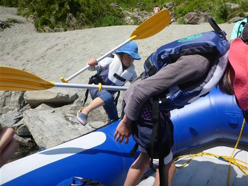
ほとんどは穏やかなところを進むが、一部激しく流れているところがある。
幼児体験可のツアーなので、あまり激しいことはやらない。
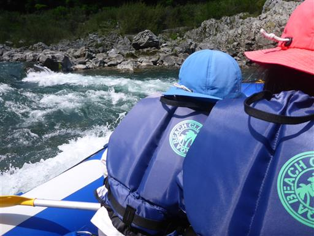
今日は暑いので川に飛び込んでいる人がいる。
この川は日本有数の激流で、ラフティングの世界大会も開催されたらしい。
中学生くらいになってから来たら、やれることが増えてもっと楽しめそうだ。
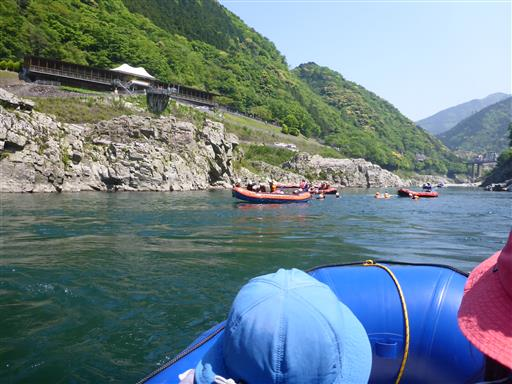
クイックジャンプ。ハーネスを付けて上から飛び降りる。
バンジージャンプではなく、ゆっくりと下りてくる。
これを娘がどうしてもやりたいと言い出し、自分の小遣い（700円）でジャンプする。
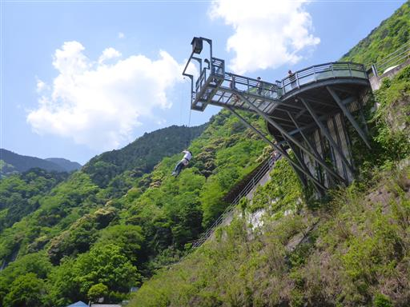
ジャンプ後、併設されている「祖谷そば もみじ亭」で昼食をとる。
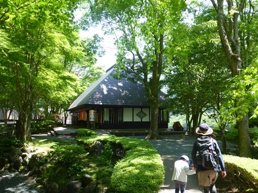
古民家を改装した建物で趣がある。
せっかくなので郷土料理の祖谷そばを食べたが、普通のそばの方が好みだ。
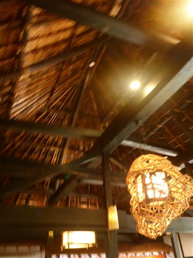
もう1つ観光してからキャンプ場に向かうことにする。
向かったのは龍王の滝。道中の山の斜面から望む山村風景が美しい。
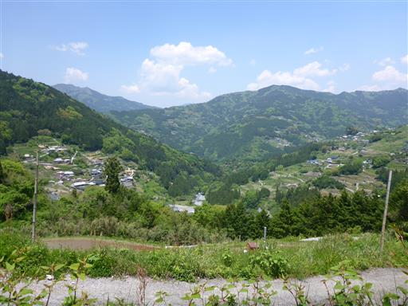
駐車場に車を停める。すれ違い困難な細い道を登ってきたが、
何台か車が停まっているので訪れている人はいるようだ。
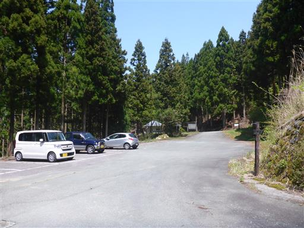
滝までは駐車場から10分ほど。
山道っぽいので子供たちは不平不満を言っている。
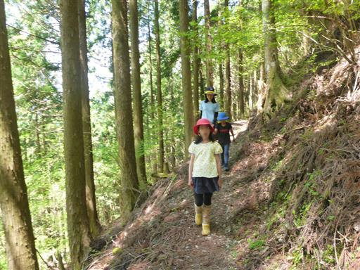
新緑が美しい。
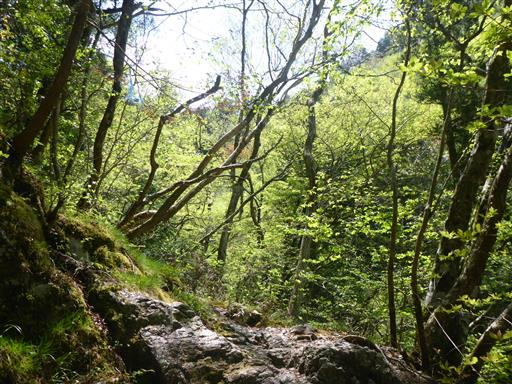
竜王の滝に到着。落差20m。
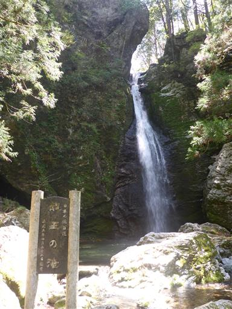
滝壺のすぐ側まで行けるので、水しぶきが涼しい。
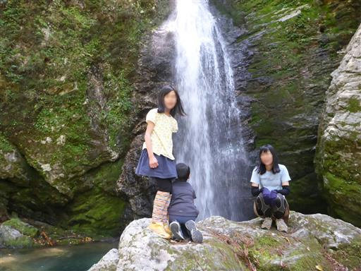
駐車場に戻ってくる。側に展望台があったので登ってみたが、大したものは見えない。
これで本日の観光は終わり。キャンプ場に向かうことにする。
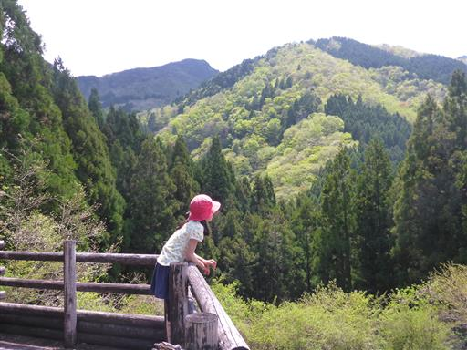
マルナカ 三本松店で買い物。今夜と明日の食料を買い込む。
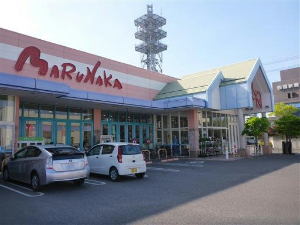
本日はとらまる公園キャンプ場に宿泊。
手続きのために訪れた体育館は他を圧倒する巨大さだ。
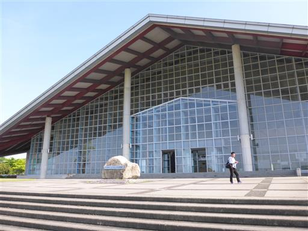
8区画の比較的小規模のキャンプ場だが、広々としていて気持ちが良い。
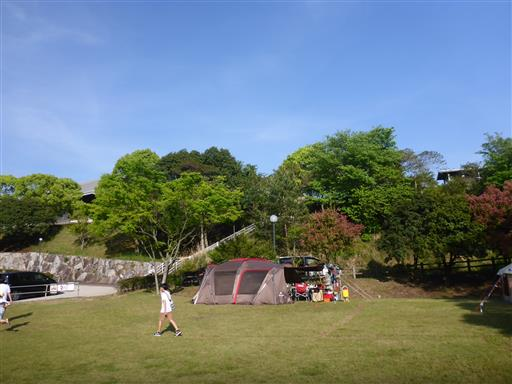
キャンプサイトの近くに「冒険の森」がある。
テント設営の間、ここで遊ぶように促したのだが、息子は一人で迷子になるのが嫌で、
娘も一人で遊ぶのは嫌で、結局戻ってくる。
娘は息子の面倒を全く見ずにすぐ放置するので、息子は娘を全く信用していない。
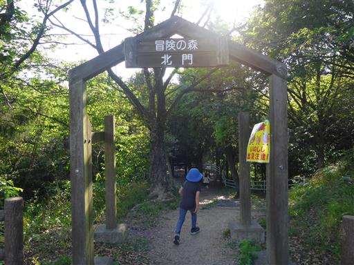
1時間ほどで設営が完了。
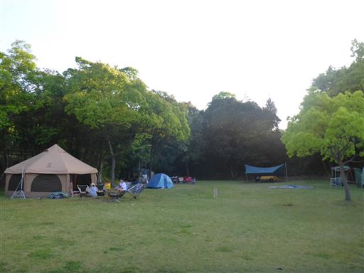
改めて子供たちを連れて冒険の森に行く。
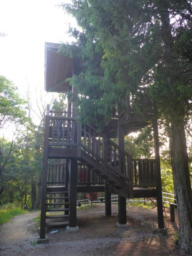
アスレチックのような遊具から、公園にあるような遊具まで
あちらこちらに遊具が点在している。
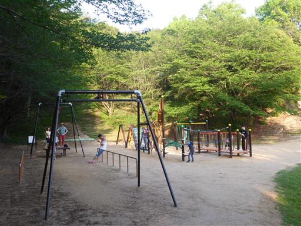
日が傾いてきた。
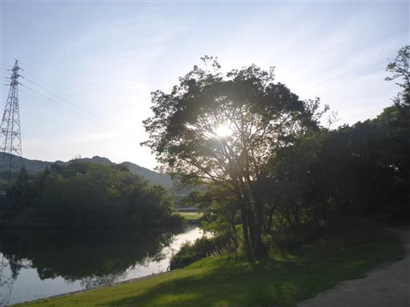
子供達が一番喜んだのが、この複合遊具。
思いっきり体を動かして遊ぶ。
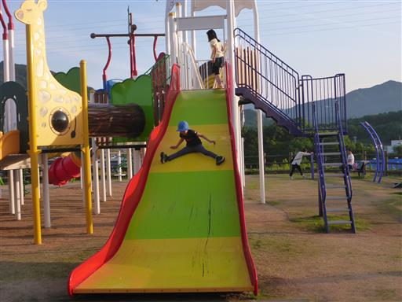
公園のすぐ側は高速道路。明日はスムーズに帰れそうだ。
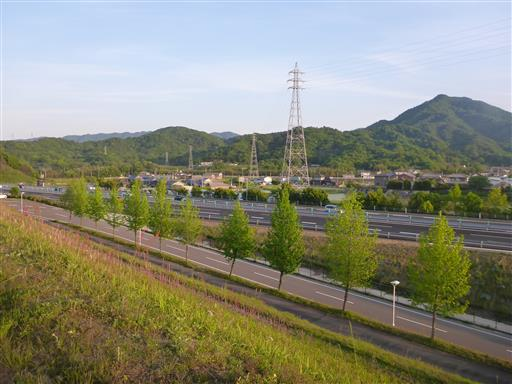
この公園には人形劇場がある。年100回以上公演をしているらしい。

側には巨大な砂場がある。ここでもひと遊び。
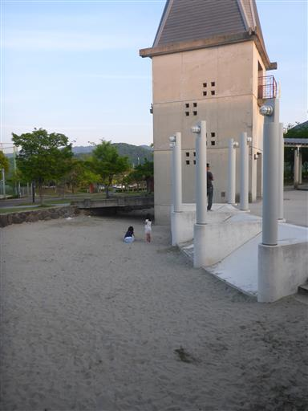
キャンプサイトに戻ってくる。
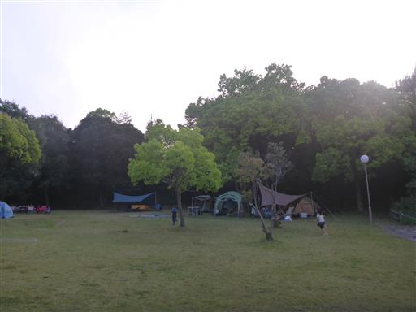
夕飯をとったら、公園内を散策してみることにする。
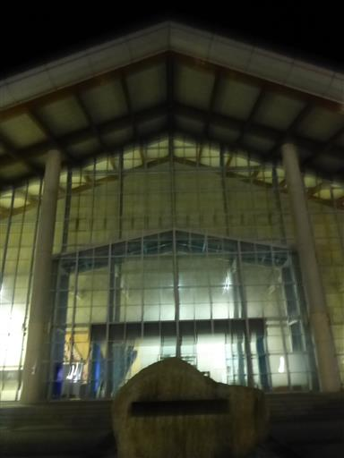
この体育館は「てぶくろ体育館」と名付けられていて、
館内にはてぶくろで造った巨大なてぶくろが展示されている。
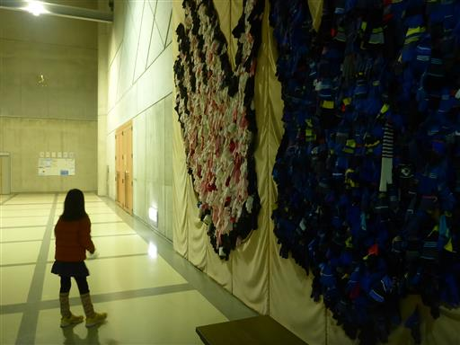
夜景？光の量は少ないが、ポツポツと光が付いている。
大きな公園をぐるっと一周したら、テントに戻る。
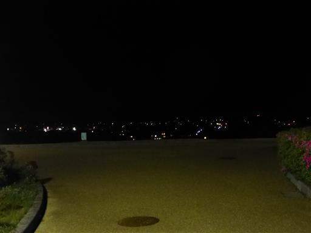
6日目
今日も子供達には朝食をとらせて、大人たちは撤収。7時に出発する。
今回の旅行は序盤が雨で、行きたい場所の半分くらいしか行けなかった。
ただ、その中でメインの石鎚山には一番の快晴の日に登れ、
西赤石山のアケボノツツジもいくらか眺めることができ、満足できる旅行になった。
今回は3か所のキャンプ場を利用したが、設営と撤収が大変なので、
次に計画するときは極力1か所に留まるようにしようと思った。
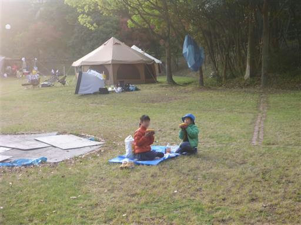